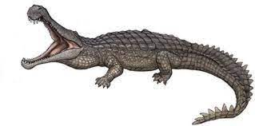

Argentinosaurus huinculensis (gr. «reptil de Argentina de Plaza Huincul») es la única especie conocida del género extinto Argentinosaurus de dinosaurio saurópodo titanosauriano que vivió a mediados del período Cretácico, entre hace 97 y 93,5 millones de años, en el Cenomaniense, en lo que hoy es América del Sur. Es uno de los animales terrestres más grandes de los que se tiene conocimiento actualmente. Pero los restos conocidos son escasos, por lo que no se puede estimar de manera precisa sus dimensiones corporales. De entre las diferentes estimaciones propuestas, el promedio sería de 33 metros de longitud y 67 toneladas de peso, lo que lo sitúa entre los mayores dinosaurios conocidos.
Sus vestigios óseos fueron descubiertos por Guillermo Heredia, en una estancia rural cerca de Plaza Huincul, en la Patagonia argentina. Tras la denuncia, personal proveniente de distintas instituciones se encargaron de la extracción de las osamentas fosilizadas. El material se encuentra ahora bajo el resguardo del Museo Carmen Funes y del Museo de La Plata.34 Desde entonces, se han hecho diversos estudios para intentar descubrir sus características biológicas, tanto en el área biomecánica, taxonómica y morfológica, entre otras. El paisaje natural en que vivió era muy diferente al medio ambiente actual de la Patagonia argentina, era más exuberante y cálido, con la presencia de bosques templados o subtropicales y extensas planicies aluviales, opuesto al contemporáneo ambiente semiárido y seco.
Argentinosaurus se encuentra entre los dinosaurios más grandes que se han conocido, y entre los mayores animales que pisaron la faz de la Tierra. Las dimensiones de sus restos óseos son casi excepcionales en el registro fósil. Diferentes estudios, a lo largo de los años, han estimado su tamaño en un rango de entre 30 a 39,7 metros de longitud, con un peso de 55 a 70 toneladas, y una altura de 15 o 16 metros al erguir el cuello. Semejantes proporciones debieron serle muy útiles para protegerse ante el eventual ataque de los depredadores, ya que en la Patagonia de aquella época el Argentinosaurus probablemente coexistió con grandes formas de vida carnívoras, como Mapusaurus o Giganotosaurus.
Argentinosaurus debió tener una cabeza bastante pequeña en proporción a su cuerpo, provista de simples pero largas coronas dentarias, delgadas y en forma de tubo, preparadas para cortar eficazmente la vegetación arbórea y con un largo cuello, para alcanzar las copas de los árboles. Su torso debió haber sido robusto y musculoso, para alojar sus enormes órganos internos, y sostenido por cuatro patas macizas y cilíndricas para mantener en pie su cuerpo, con una cola que utilizaba como contrapeso y equilibrio.
| DINOSAURIOS | ||
 |
 |
 |
|  |
 |
 |